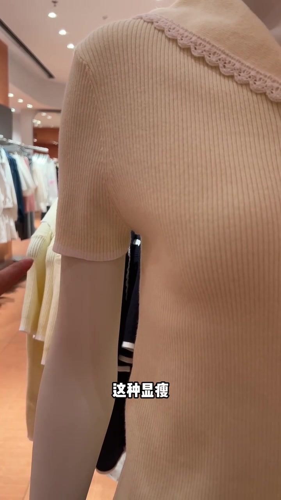
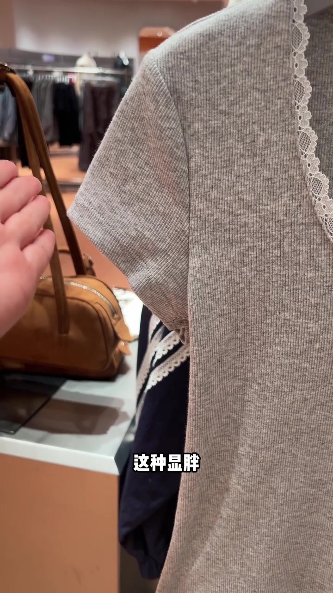
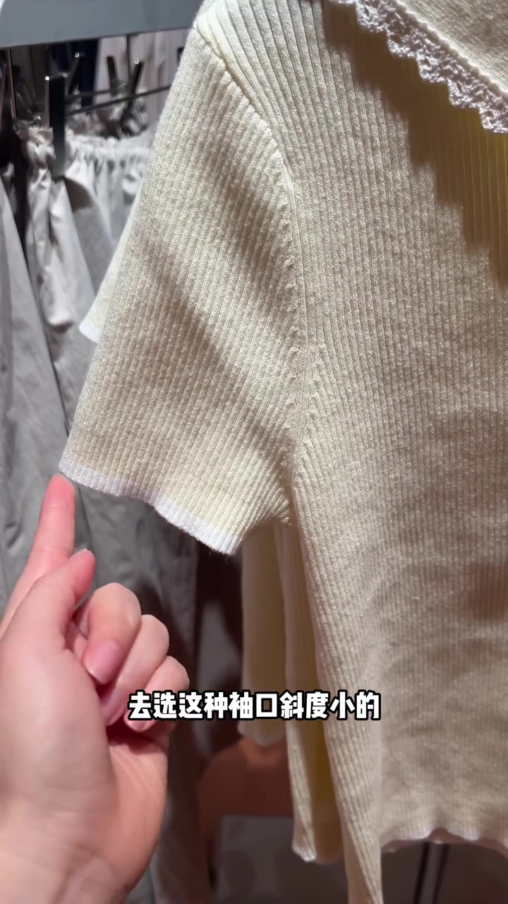
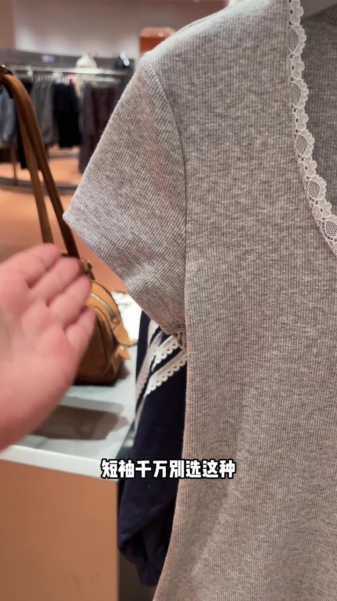
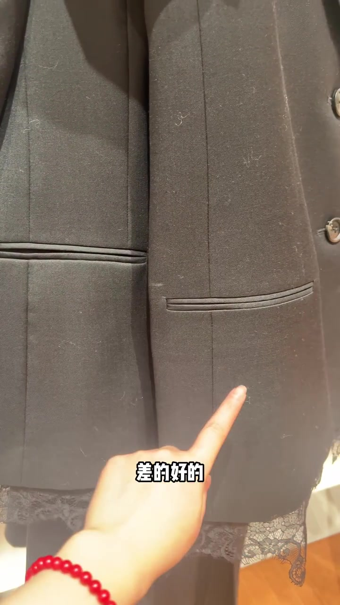
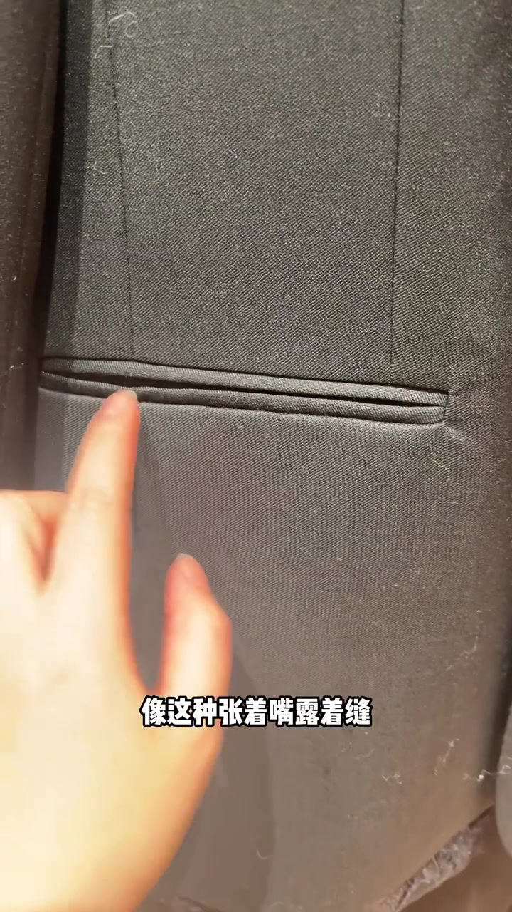
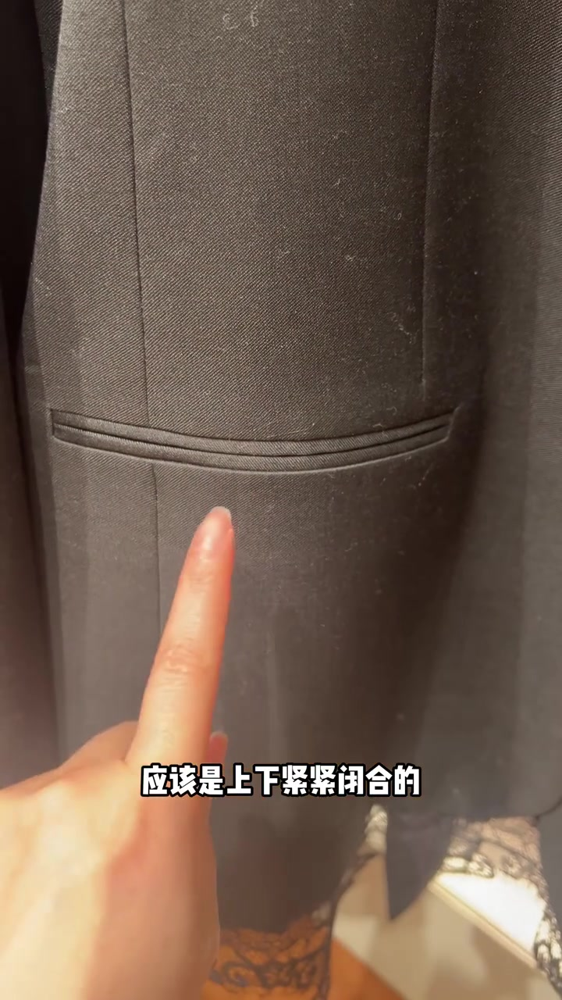
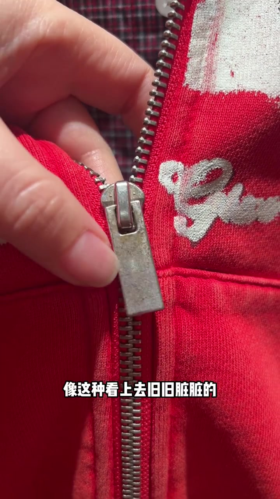

00:00–00:11
开场：同店短袖，先钉“显瘦 / 显胖”
镜头贴近米色罗纹短袖人模，字幕直接写出“这种显瘦”，手指点向袖口；下一秒切到灰色蕾丝领短袖，叠字变成“这种显胖”。挑衣服的难题，被压成袖口一条斜线。
主讲人接着示范“去选这种袖口斜度小的”——越趋近水平线，上身后越容易藏肉、越显瘦。画面里指尖按在袖口白边，把斜度讲成可摸的细节，而不是抽象版型词。
可见字幕校正：Whisper 把“袖口”听成“绣口”，“越趋水平线”听成“越去水平线”。下文按画面字幕叙述，文末转录区仍保留原始分段。

[00:01] 开场先钉“显瘦”：米色罗纹短袖，手指点向袖口。
Opening pins down “slimming” first: a beige ribbed tee, finger pointing at the cuff.

[00:02] 立刻对照“显胖”：灰色蕾丝短袖，建立好坏预期。
Immediately contrasting “looks fat”: a gray lace short sleeve, establishing good/bad expectations.

[00:03] 推荐袖口斜度小、趋近水平线的款式，方便上身藏肉。
Recommend cuff cuts with a slight, near-horizontal slope to hide upper-arm fullness.
00:11–00:25
短袖避雷：袖口斜度越大，手臂最粗处暴露越多
语气转硬：“短袖千万别选这种袖口斜度大的。”镜头回到灰色蕾丝短袖，解释斜度越大，手臂最粗的地方暴露越多，越显胖显壮。
随后两件黑色外套并排，主讲人指着中间喊“来，更直观的对比一下，是不是高下立见”，并叠字“差的 / 好的”。袖口段落到此收束，下一秒话题切到口袋做工。
字幕校正：Whisper 将“短袖”听成“短绣”，“高下立见”听成“高下立显”。

[00:12] 明确避雷：短袖别选袖口斜度过大的款。
Explicit pitfall: for short sleeves, avoid overly slanted cuffs.

[00:24] 并排对比收束袖口段，叠字“差的 / 好的”，高下立见。
A side-by-side comparison closes the cuff section, overlay “bad / good” — the difference is obvious at once.
00:25–00:41
双唇袋：一眼只看中间那条缝
标准被说得很干脆：一眼分辨双唇袋好坏，就看中间这条缝。差的像“张着嘴、露着缝、合不拢”，应该打回去重新做；好的中间那条线上下紧紧闭合。
画面先贴住开裂的嵌线袋口，再切到闭合平整的样例，手指始终钉在缝线上。这一段不再谈显瘦，而是把“好坏”落到可复检的口袋工艺。
字幕校正：Whisper 把“双唇袋”听成“双重带”，“露着缝”听成“漏着缝”。画面叠字为“一眼分辨双唇袋好坏”。

[00:30] 差样：双唇袋张嘴露缝，合不拢，被认为该打回重做。
Bad sample: double-welt pockets gape open and won't close — deemed worthy of being sent back.

[00:40] 好样：中间缝线上下紧紧闭合，作为做工合格参照。
Good sample: the center seam closes tightly top to bottom — a benchmark of acceptable workmanship.
00:41–01:13
洗水件要长点心眼：先看金属拉头有没有被洗坏
镜头切到 Urban Revivo 挂架上的红色拉链卫衣，字幕提醒：但凡看到发白发旧、做过洗水工艺的衣服，一定要去看拉头。像这种看上去旧旧脏脏的，就是洗坏的。
主讲人解释洗水不是简单用水冲一下，而是加洗涤剂、双氧水、生物酶等去浆、变软定型；若金属拉头没包好，就容易褪色、变色、损伤；包好了，出来仍能接近本来颜色。手指始终按在银白拉头与拉链齿上，把抽象工艺变成店内可摸的检查点。
字幕校正：Whisper 将“长点心眼”听成“长得心眼”，“旧旧脏脏”听成“舅舅脏脏”，“洗涤剂 / 双氧水 / 生物酶”听成“洗蹄剂 / 上氧水 / 生物煤”。

[00:49] 洗水件检查点：金属拉头若旧旧脏脏，被视为洗坏信号。
Wash-item check: if the metal zipper pull looks old and grimy, it reads as a washed-out signal.